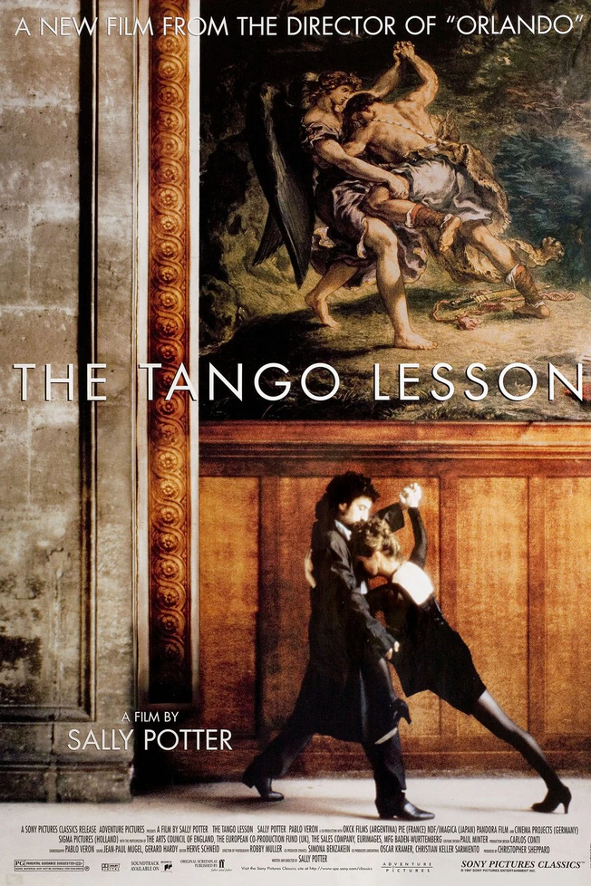
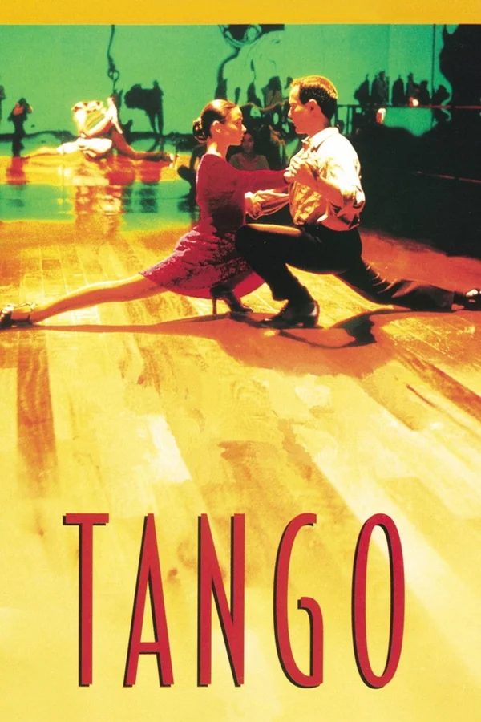
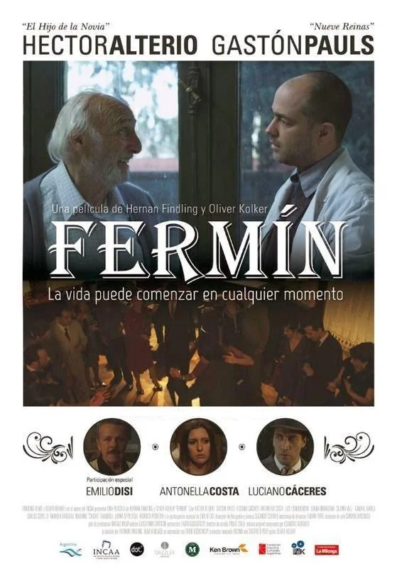
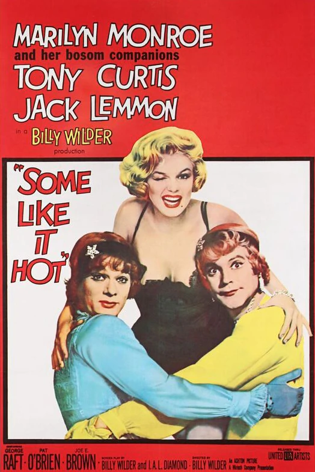
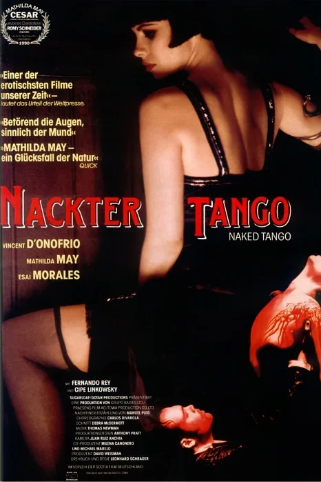
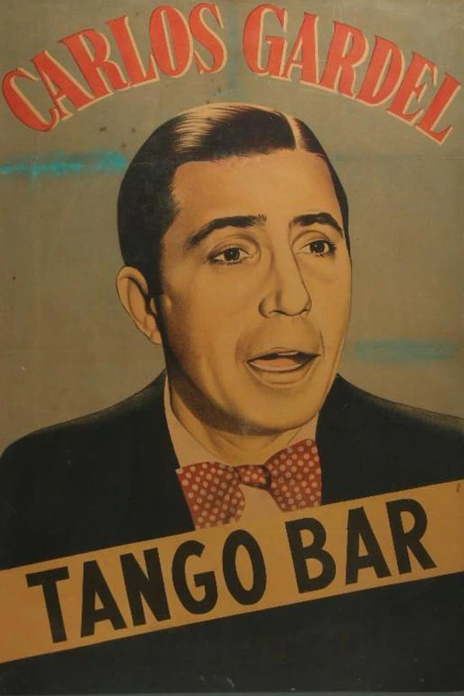
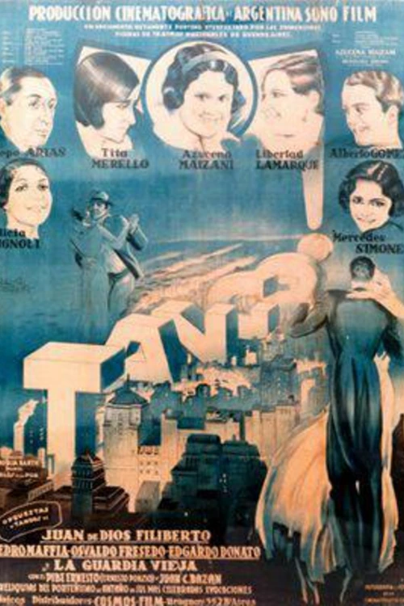
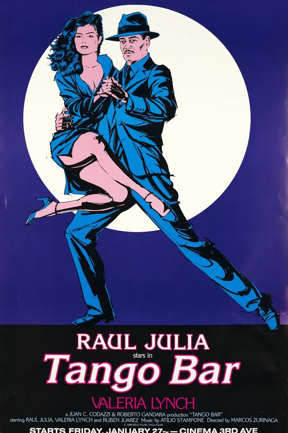

Урок танго
Салли Поттер
В одних картинах танго занимает несколько минут, в других на нём держится весь сюжет. Кинотека TangoCity собирает оба случая.

Салли Поттер
Мартин Брест

Карлос Саура

Эрнан Финдлинг и Оливер Колкер
Фредерик Фонтейн

Билли Уайлдер

Леонард Шрейдер

Джон Райнхардт

Луис Молья Барт
В 2013 году TangoCity провела в Москве фестиваль фильмов о танго. В его программе был Tango libre Фредерика Фонтейна.

В кинотеке TangoCity также указан «Танго-бар» 1988 года. Фильм с Карлосом Гарделем, в котором звучит Por una cabeza, вышел в 1935 году.